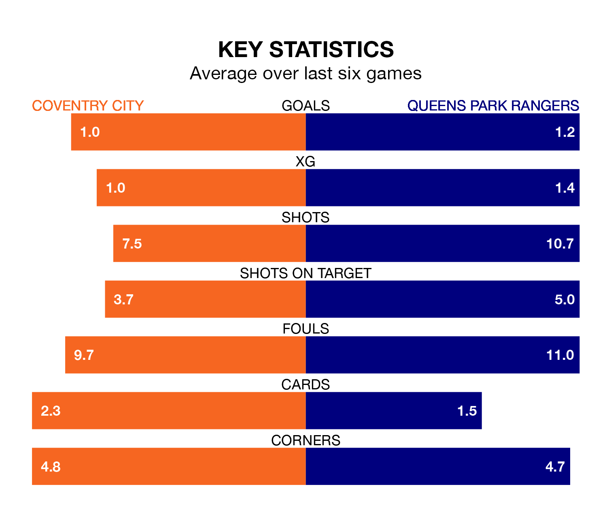

Coventry City face Queens Park Rangers at the Coventry Building Society Arena on Saturday lunchtime looking to secure a first win in six EFL Championship games.
The Sky Blues have lost four and drawn one matches since they last earned three points – against Leeds United on April 6.
They face a QPR side who have won two and drawn one over that time.
With 45 goals in 45 games so far this season, QPR are scoring at below the league average rate with 1.0 goals per game. And they are conceding at an average rate, letting in 57 goals at a rate of 1.3 per game.
Coventry, meanwhile, are above average scorers, with 1.5 goals per game, compared to a league average of 1.3. They have conceded 1.3 goals per game.
In the last 10 years, Coventry and QPR have played each other on seven occasions. Coventry won four of them and QPR three.
On average, the Sky Blues scored 1.7 goals and QPR 1.4 in those matches.
Their last meeting was on September 30, when Coventry won 3-1 away.
In Asmir Begović, Rangers can rely on one of the league's safest pair of hands. He has kept 13 clean sheets in his 45 appearances this season in EFL Championship.
In City's net, Bradley Collins has eight clean sheets in 27 games.
The away side are 17th in the table after 45 games, of which they have won 14 and drawn 11, earning 53 points.
The Sky Blues are eight places ahead of QPR in ninth, with 17 wins and 13 draws putting them on 64 points.
Coventry's last match was on Tuesday, a 2-1 loss against Ipswich Town, with Haji Wright getting the goal for the Sky Blues.
QPR beat Leeds United 4-0 last time out, on April 26, with Ilias Chair, Lucas Andersen, Lyndon Dykes and Sam Field on the scoresheet.
Saturday's match will be refereed by Joshua Smith, who has taken charge of 25 EFL Championship games so far this season, issuing four red cards and booking 99 players. He has awarded four penalties.
The last QPR game Smith refereed was the 2-1 win at home against Birmingham City on March 29. He is yet to oversee a match featuring Coventry this season.
Updated: 12:00 (UTC), 02/05/24